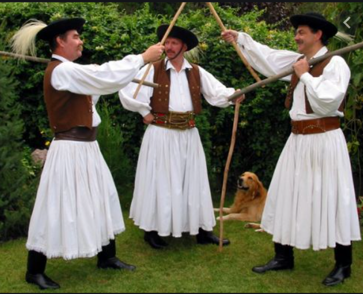

Below is a map of greater Hungary. Each region has its own folk dance and its unique folk costume.
Also known as the csardas, Hungarian couple dances involve a man leading the woman often holding her on her hip or shoulders. Men improvise and give clues to their partner about what the next move will be. There is a slow and fast section of each dance. Dance moves differ depending on the area of the country, with some being more jumpy and others more spinny.

In this dance, men would show off their flexibility and endurance with an energetic combination of jumps, leg lifts, and boot slapping. Sometimes, these would be performed as recruiting dances to entice young men to join the military. They would try to outdo each other and compete.
Circle dances brought women together before they were picked a partner for couple dances. They would follow a leader from their group and have a set sequence of steps. Often they would dance to their own singing rather than to music.

Peasants and shepherds used sticks for self-defense, therefore, they incorporated duelling moves into stick dances. They would twirl their sticks skillfully to show their prowess and tap them to the floor and against each other's sticks. In some parts of the country, they would use a hatchet, broom, or whip to perform this type of dance.
Below is a video of a traditional Hungarian tanchaz or "dance house." The dance house stems from the revival movement of Hungarian traditional culture in the 1970s. They recreated the social activities of the past where people would gather to dance after a long day of shared work.